Previous research has investigated the application of Multimodal Large Language Models (MLLMs) in understanding 3D scenes by interpreting them as videos. These approaches generally depend on comprehensive 3D data inputs, such as point clouds or reconstructed Bird's-Eye View (BEV) maps.
In our research, we advance this field by enhancing the capability of MLLMs to understand and reason in 3D spaces directly from video data, without the need for additional 3D input. We propose a novel and efficient method, the Video-3D Geometry Large Language Model (VG LLM). Our approach employs a 3D visual geometry encoder that extracts 3D prior information from video sequences. This information is integrated with visual tokens and fed into the MLLM.
Extensive experiments have shown that our method has achieved substantial improvements in various tasks related to 3D scene understanding and spatial reasoning, all directly learned from video sources. Impressively, our 4B model, which does not rely on explicit 3D data inputs, achieves competitive results compared to existing state-of-the-art methods, and even surpasses the Gemini-1.5-Pro in the VSI-Bench evaluations.
In this work, we propose Video-3D Geometry LLM (VG LLM), a novel framework designed to explicitly integrate 3D visual geometry priors into MLLMs. To achieve this, we introduce a 3D visual geometry encoder that enriches input visual sequences with additional geometric information. Specifically, input images are processed by both a conventional visual encoder and the newly integrated 3D visual geometry encoder. The features extracted by these encoders are fused at the patch level and subsequently passed to the MLLM backbone.
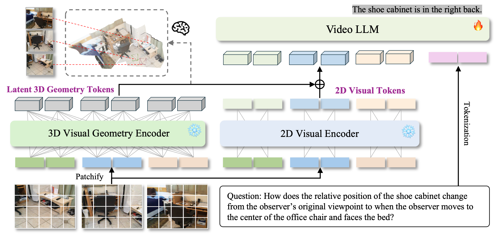
Our method effectively handles spatial relationships between objects (e.g., away, opposite, next to), accurately identifying the corresponding frame index and generating the 3D-oriented bounding box.
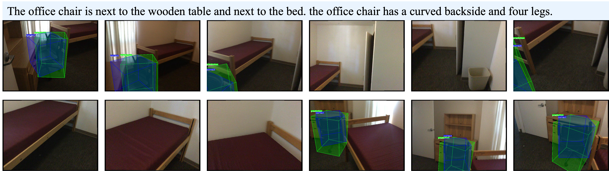
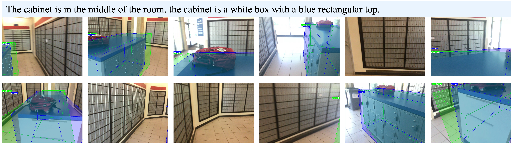
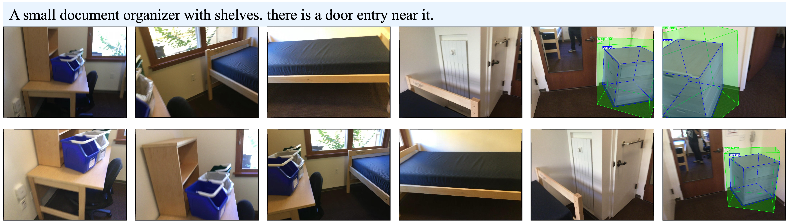
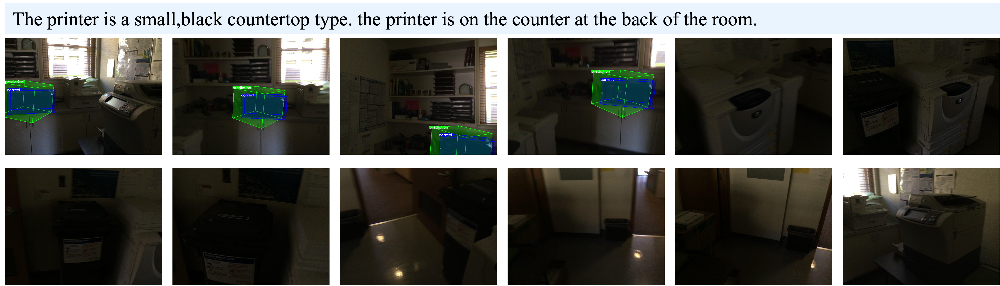
From this figure, we observe that while the baseline performs decently in detecting objects in a given video, incorporating 3D geometry significantly improves both detection precision and recall.
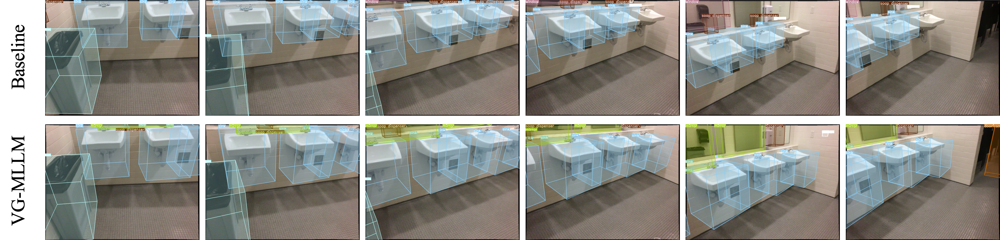
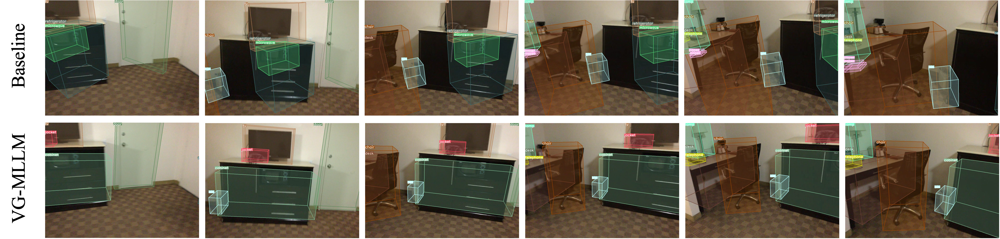
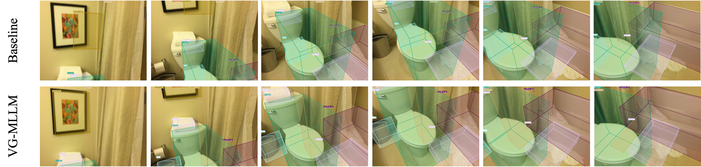
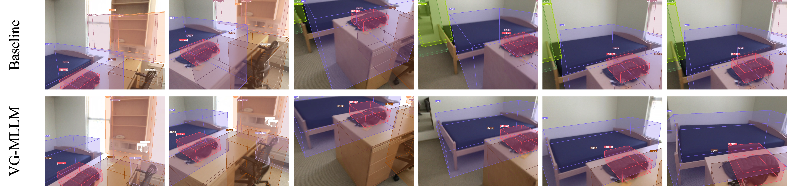
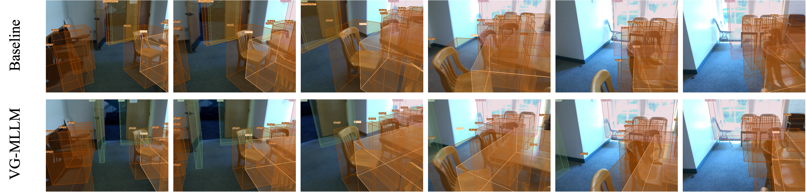
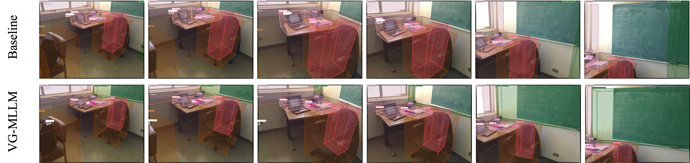
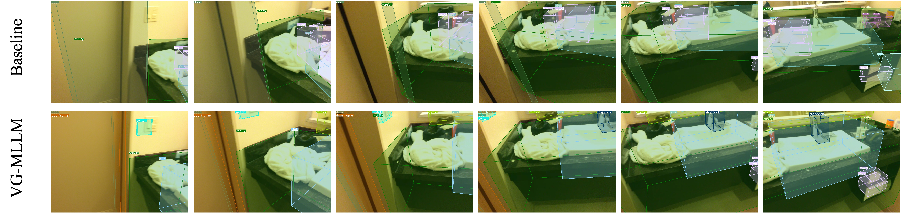
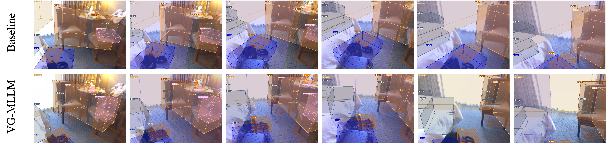
@misc{zheng2025learningvideos3dworld,
title={Learning from Videos for 3D World: Enhancing MLLMs with 3D Vision Geometry Priors},
author={Duo Zheng and Shijia Huang and Yanyang Li and Liwei Wang},
year={2025},
eprint={2505.24625},
archivePrefix={arXiv},
primaryClass={cs.CV},
url={https://arxiv.org/abs/2505.24625},
}